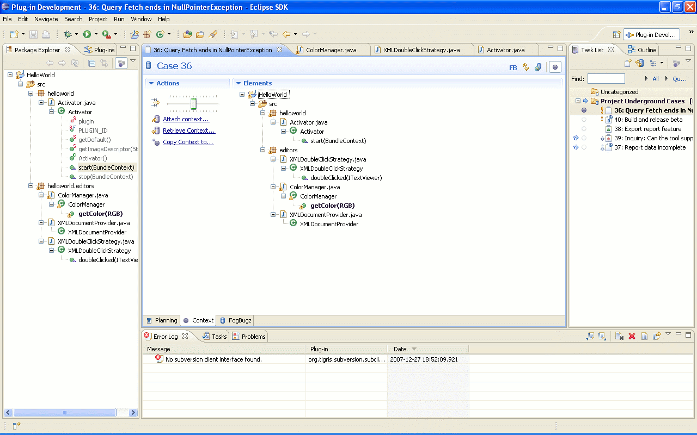

Context attachment
- When context management is enabled (Window ->
Preferences -> Mylyn -> Context) and a task is active, a
context forms around the task that is worked upon. This task context
pertains to the active task and can be attached to the task in the
repository. The context tab in the rich editor (or pop-up menu item Context in Task List view) allows the current
context to be attached to the repository task or to be copied onto a
different task.
- The
various attached contexts can also be retrieved from the repository and
activated in the navigator using the context tab in Rich UI, or the
menu options in Task List view.
- This allows code context to be shared among developers when a task is reassigned or reviewed.
